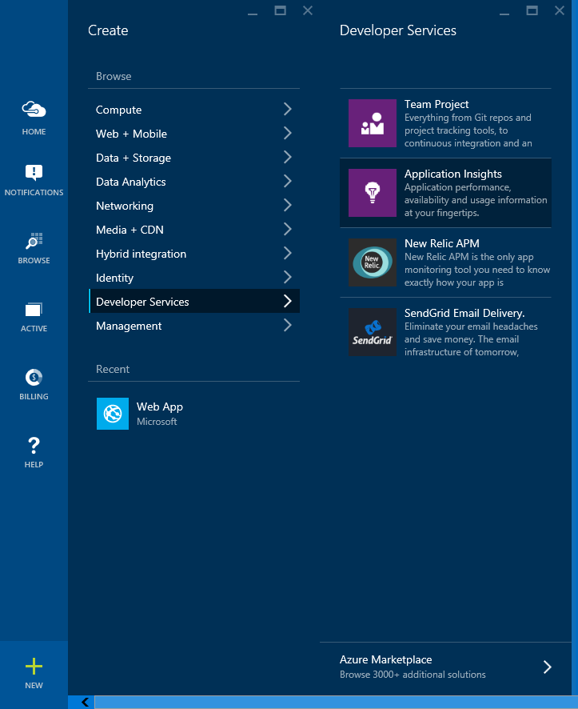
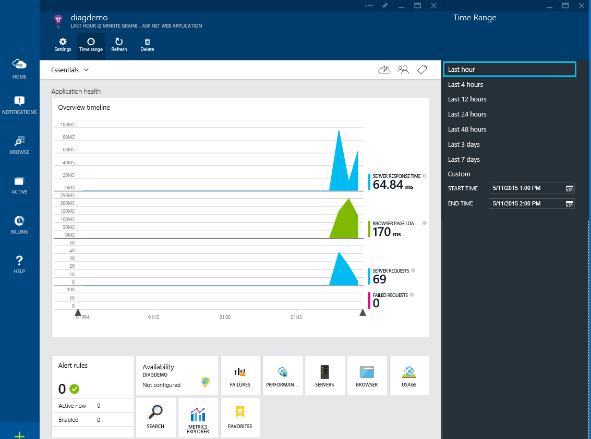
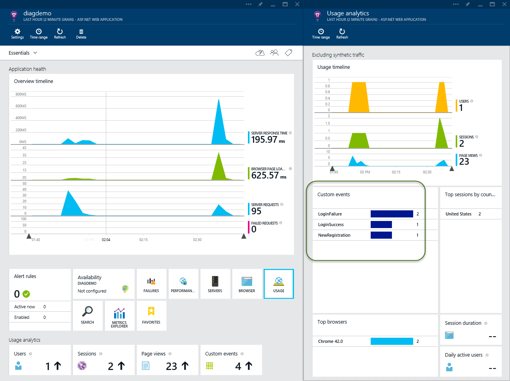

Application Insights¶
By Steve Smith
Application Insights provides development teams with a 360° view across their live application’s performance, availability, and usage. It can also detect and diagnose issues and exceptions in these applications. Telemetry data may be collected from web servers and web clients, as well as desktop and mobile applications.
- In this article:
View or download sample on GitHub.
Getting started¶
Application Insights, like ASP.NET 5, is in preview.
To get started with Application Insights, you will need a subscription to Microsoft Azure. If your team or organization already has a subscription, you can ask the owner to add you to it using your Microsoft account.
Sign in to the Azure portal with your account and create a new Application Insights resource.
Choose ASP.NET as the application type. Note the Instrumentation Key (under Settings, Properties) associated with the Application Insights resource you’ve created (see detailed instructions with more screenshots here). You will need the instrumentation key in a few moments when you configure your ASP.NET 5 application to use Application Insights.
Next, update project.json to add a new reference to Microsoft.ApplicationInsights.AspNet in your dependencies section, as shown:
1 2 3 4 5 6 7 8 9 10 11 12 13 14 15 16 17 18 19 20 21 22 23 24 25 | "dependencies": {
"EntityFramework.SqlServer": "7.0.0-beta6",
"EntityFramework.Commands": "7.0.0-beta6",
"Microsoft.AspNet.Mvc": "6.0.0-beta6",
"Microsoft.AspNet.Mvc.TagHelpers": "6.0.0-beta6",
"Microsoft.AspNet.Authentication.Cookies": "1.0.0-beta6",
"Microsoft.AspNet.Authentication.Facebook": "1.0.0-beta6",
"Microsoft.AspNet.Authentication.Google": "1.0.0-beta6",
"Microsoft.AspNet.Authentication.MicrosoftAccount": "1.0.0-beta6",
"Microsoft.AspNet.Authentication.Twitter": "1.0.0-beta6",
"Microsoft.AspNet.Diagnostics": "1.0.0-beta6",
"Microsoft.AspNet.Diagnostics.Entity": "7.0.0-beta6",
"Microsoft.AspNet.Identity.EntityFramework": "3.0.0-beta6",
"Microsoft.AspNet.Server.IIS": "1.0.0-beta6",
"Microsoft.AspNet.Server.WebListener": "1.0.0-beta6",
"Microsoft.AspNet.StaticFiles": "1.0.0-beta6",
"Microsoft.AspNet.Tooling.Razor": "1.0.0-beta6",
"Microsoft.Framework.Configuration.Abstractions": "1.0.0-beta6",
"Microsoft.Framework.Configuration.Json": "1.0.0-beta6",
"Microsoft.Framework.Configuration.UserSecrets": "1.0.0-beta6",
"Microsoft.Framework.Logging": "1.0.0-beta6",
"Microsoft.Framework.Logging.Console": "1.0.0-beta6",
"Microsoft.VisualStudio.Web.BrowserLink.Loader": "14.0.0-beta6",
"Microsoft.ApplicationInsights.AspNet": "1.0.0-beta6"
},
|
Saving the project.json file will download and install the required packages.
Next, edit (or create) the config.json file, adding the instrumentation key you noted above from your Application Insights resource in Windows Azure. Specify an “ApplicationInsights” section with a key named “InstrumentationKey”. Set its value to the instrumentation key.
1 2 3 4 5 6 7 8 9 10 | {
"ApplicationInsights": {
"InstrumentationKey": "YOUR KEY GOES HERE"
},
"Data": {
"DefaultConnection": {
"ConnectionString": "Server=(localdb)\\mssqllocaldb;Database=aspnet5-AppInsightsDemo-8cf4d67e-57bd-4ccb-bdf4-384ca147edf3;Trusted_Connection=True;MultipleActiveResultSets=true"
}
}
}
|
Next, in Startup.cs you need to configure Application Insights in a few places. In the constructor, where you configure Configuration, add a block to configure Application Insights for development:
1 2 3 4 5 6 7 8 9 | if (env.IsDevelopment())
{
// This reads the configuration keys from the secret store.
// For more details on using the user secret store see http://go.microsoft.com/fwlink/?LinkID=532709
builder.AddUserSecrets();
// This will push telemetry data through Application Insights pipeline faster, allowing you to view results immediately.
builder.AddApplicationInsightsSettings(developerMode: true);
}
|
Note
Setting AppInsights in developerMode (configuration.AddApplicationInsightsSettings(developerMode: true)) will expedite your telemetry through the pipeline so that you can see results immediately (learn more).
Add the Application Insights telemetry services in your ConfigureServices() method:
1 2 3 4 | public void ConfigureServices(IServiceCollection services)
{
// Add Application Insights data collection services to the services container.
services.AddApplicationInsightsTelemetry(Configuration);
|
Then, in the Configure() method add middleware to allow Application Insights to track exceptions and log information about individual requests. Note that the request tracking middleware should be as the first middleware in the pipeline, while the exception middleware should follow the configuration of error pages or other error handling middleware.
An edited Startup.cs is shown below, highlighting the necessary Application Insights code (view full Startup.cs):
1 2 3 4 5 6 7 8 9 10 11 12 13 14 15 16 17 18 19 20 21 22 23 24 25 26 | public void Configure(IApplicationBuilder app, IHostingEnvironment env, ILoggerFactory loggerFactory)
{
loggerFactory.MinimumLevel = LogLevel.Information;
loggerFactory.AddConsole();
// Configure the HTTP request pipeline.
// Add Application Insights to the request pipeline to track HTTP request telemetry data.
app.UseApplicationInsightsRequestTelemetry();
// Add the following to the request pipeline only in development environment.
if (env.IsDevelopment())
{
app.UseBrowserLink();
app.UseErrorPage();
app.UseDatabaseErrorPage(DatabaseErrorPageOptions.ShowAll);
}
else
{
// Add Error handling middleware which catches all application specific errors and
// sends the request to the following path or controller action.
app.UseErrorHandler("/Home/Error");
}
// Track data about exceptions from the application. Should be configured after all error handling middleware in the request pipeline.
app.UseApplicationInsightsExceptionTelemetry();
|
Now add the Application Insights scripts to your views. Add the following to the very top of the _ViewImports.cshtml file:
1 2 3 4 5 | @using AppInsightsDemo
@using AppInsightsDemo.Models
@using Microsoft.AspNet.Identity
@addTagHelper "*, Microsoft.AspNet.Mvc.TagHelpers"
@inject Microsoft.ApplicationInsights.Extensibility.TelemetryConfiguration TelemetryConfiguration
|
Then, add the following line of code in your _Layouts.cshtml file at the end of the <head> section (before any other JavaScript blocks specified there):
1 2 3 4 5 6 7 8 9 10 11 12 13 14 15 16 17 18 19 20 21 | <head>
<meta charset="utf-8" />
<meta name="viewport" content="width=device-width, initial-scale=1.0" />
<title>@ViewData["Title"] - AppInsightsDemo</title>
<environment names="Development">
<link rel="stylesheet" href="~/lib/bootstrap/dist/css/bootstrap.css" />
<link rel="stylesheet" href="~/lib/bootstrap-touch-carousel/dist/css/bootstrap-touch-carousel.css" />
<link rel="stylesheet" href="~/css/site.css" />
</environment>
<environment names="Staging,Production">
<link rel="stylesheet" href="//ajax.aspnetcdn.com/ajax/bootstrap/3.0.0/css/bootstrap.min.css"
asp-fallback-href="~/lib/bootstrap/css/bootstrap.min.css"
asp-fallback-test-class="hidden" asp-fallback-test-property="visibility" asp-fallback-test-value="hidden" />
<link rel="stylesheet" href="//ajax.aspnetcdn.com/ajax/bootstrap-touch-carousel/0.8.0/css/bootstrap-touch-carousel.css"
asp-fallback-href="~/lib/bootstrap-touch-carousel/css/bootstrap-touch-carousel.css"
asp-fallback-test-class="carousel-caption" asp-fallback-test-property="display" asp-fallback-test-value="none" />
<link rel="stylesheet" href="~/css/site.css" asp-file-version="true" />
</environment>
@Html.ApplicationInsightsJavaScript(TelemetryConfiguration)
</head>
|
Viewing activity¶
You can view the activity from your site once it’s been configured and you’ve made some requests to it by navigating to the Azure portal. There, you will find the Application Insights resource you configured previously, and you will be able to view charts showing performance and activity data:
In addition to tracking activity and performance data on every page, you can also track specific events. For instance, if you want to know any time a user completes a certain transaction, you can create and track such events individually. To do so, you should inject the TelemetryClient into the controller in question, and call its TrackEvent method. In the included sample, we’ve added event tracking for user registration and successful and failed login attempts. You can see the required code in the excerpt from AccountController.cs shown below:
1 2 3 4 5 6 7 8 9 10 11 12 13 14 15 16 17 18 19 20 21 22 23 24 25 26 27 28 29 30 31 32 33 34 35 36 37 38 39 40 41 42 43 44 45 46 47 48 49 50 51 52 53 54 55 56 57 58 59 60 61 62 63 64 65 66 67 68 69 70 71 72 73 74 75 76 77 78 79 80 81 82 83 84 85 86 87 88 89 90 91 92 93 94 95 96 97 98 99 100 101 102 103 104 105 106 107 108 109 110 111 112 113 114 115 116 117 118 | using System;
using System.Collections.Generic;
using System.Linq;
using System.Security.Claims;
using System.Security.Principal;
using System.Threading.Tasks;
using Microsoft.AspNet.Authentication;
using Microsoft.AspNet.Authorization;
using Microsoft.AspNet.Identity;
using Microsoft.AspNet.Mvc;
using Microsoft.AspNet.Mvc.Rendering;
using Microsoft.Data.Entity;
using Microsoft.Data.Entity.Infrastructure;
using AppInsightsDemo;
using AppInsightsDemo.Models;
using AppInsightsDemo.Services;
using Microsoft.ApplicationInsights;
namespace AppInsightsDemo.Controllers
{
[Authorize]
public class AccountController : Controller
{
private readonly UserManager<ApplicationUser> _userManager;
private readonly SignInManager<ApplicationUser> _signInManager;
private readonly IEmailSender _emailSender;
private readonly ISmsSender _smsSender;
private readonly ApplicationDbContext _applicationDbContext;
private static bool _databaseChecked;
private readonly TelemetryClient _telemetryClient;
public AccountController(
UserManager<ApplicationUser> userManager,
SignInManager<ApplicationUser> signInManager,
IEmailSender emailSender,
ISmsSender smsSender,
ApplicationDbContext applicationDbContext,
TelemetryClient telemetryClient)
{
_userManager = userManager;
_signInManager = signInManager;
_emailSender = emailSender;
_smsSender = smsSender;
_applicationDbContext = applicationDbContext;
_telemetryClient = telemetryClient;
}
//
// POST: /Account/Login
[HttpPost]
[AllowAnonymous]
[ValidateAntiForgeryToken]
public async Task<IActionResult> Login(LoginViewModel model, string returnUrl = null)
{
EnsureDatabaseCreated(_applicationDbContext);
ViewData["ReturnUrl"] = returnUrl;
if (ModelState.IsValid)
{
// This doesn't count login failures towards account lockout
// To enable password failures to trigger account lockout, set lockoutOnFailure: true
var result = await _signInManager.PasswordSignInAsync(model.Email, model.Password, model.RememberMe, lockoutOnFailure: false);
if (result.Succeeded)
{
_telemetryClient.TrackEvent("LoginSuccess");
return RedirectToLocal(returnUrl);
}
if (result.RequiresTwoFactor)
{
return RedirectToAction(nameof(SendCode), new { ReturnUrl = returnUrl, RememberMe = model.RememberMe });
}
if (result.IsLockedOut)
{
return View("Lockout");
}
else
{
_telemetryClient.TrackEvent("LoginFailure");
ModelState.AddModelError(string.Empty, "Invalid login attempt.");
return View(model);
}
}
// If we got this far, something failed, redisplay form
return View(model);
}
//
// POST: /Account/Register
[HttpPost]
[AllowAnonymous]
[ValidateAntiForgeryToken]
public async Task<IActionResult> Register(RegisterViewModel model)
{
EnsureDatabaseCreated(_applicationDbContext);
if (ModelState.IsValid)
{
var user = new ApplicationUser { UserName = model.Email, Email = model.Email };
var result = await _userManager.CreateAsync(user, model.Password);
if (result.Succeeded)
{
// For more information on how to enable account confirmation and password reset please visit http://go.microsoft.com/fwlink/?LinkID=532713
// Send an email with this link
//var code = await _userManager.GenerateEmailConfirmationTokenAsync(user);
//var callbackUrl = Url.Action("ConfirmEmail", "Account", new { userId = user.Id, code = code }, protocol: Context.Request.Scheme);
//await _emailSender.SendEmailAsync(model.Email, "Confirm your account",
// "Please confirm your account by clicking this link: <a href=\"" + callbackUrl + "\">link</a>");
await _signInManager.SignInAsync(user, isPersistent: false);
_telemetryClient.TrackEvent("NewRegistration");
return RedirectToAction(nameof(HomeController.Index), "Home");
}
AddErrors(result);
}
// If we got this far, something failed, redisplay form
return View(model);
}
}
}
|
With this in place, testing the application’s registration and login feature results in the following activity available for analysis:
Note
Application Insights is still in development. To view the latest release notes and configuration instructions, please refer to the project wiki.
Summary¶
Application Insights allows you to easily add application activity and performance tracking to any ASP.NET 5 app. With Application Insights in place, you can view live reports showing information about the users of your application and how it is performing, including both client and server performance information. In addition, you can track custom events, allowing to you capture user activities unique to your application.